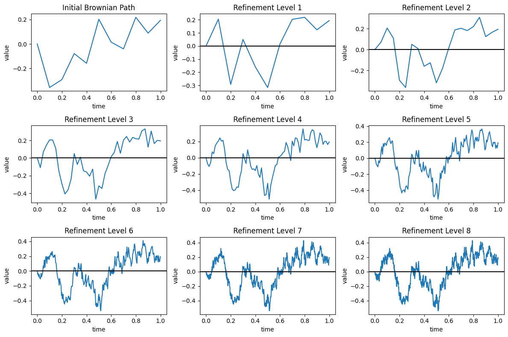
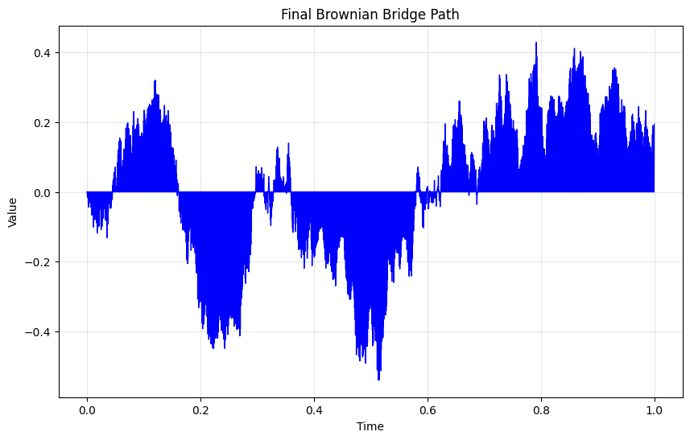
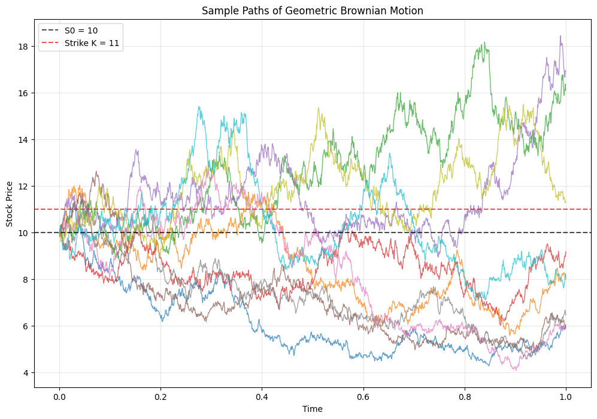

There is a lot more that you can do with outputs (such as including interactive outputs) with your book. For more information about this, see the Jupyter Book documentation
import numpy as np
import matplotlib.pyplot as plt
# (A)
# Path simulation via Brownian bridge, path refinement
# Parameters: T=final time, L=number of refinements,
# N0=number of grid points on the first level.
T = 1
L = 8
N0 = 10
N = N0 * (2**L)
EMX = np.zeros((L+1, N+1))
x0 = 0
h = T/N
# Path of Brownian motion at crudest level
B = np.concatenate([[0], np.sqrt(T/N0) * np.cumsum(np.random.randn(N0))])
# Generates 1d BM w time step size = sqrt(T/N0)
# Store initial path at coarse grid points
EMX[0, ::2**L] = B
# Places values of B into EMX[0] spaced apart by 2^L (to match full path length N+1)
# Create time vector for initial path
t = np.linspace(0, T, N0+1) # coarsest level time partition
# Plot initial path
plt.figure(figsize=(12, 8))
plt.subplot(3, 3, 1)
plt.plot(t, B)
plt.xlabel('time')
plt.ylabel('value')
plt.title('Initial Brownian Path')
# The Brownian bridge simulations
for i in range(1, L+1):
# Refinement of paths via Brownian bridge
p = 2**(L-i+1)
EMX[i, :] = EMX[i-1, :] # start from previous ref.level paths
h = T/(N0 * 2**(i-1)) # time step in this ref.level
length = N//p//2 # Number of midpoints to fill in by BB
# Generate random increments for bridge
random_increments = np.random.randn(length)
# Apply Brownian bridge formula
for j in range(length):
""" Use BB formula to interpolate the midpoint value
B_mid = (B_left + B_right)/ 2 + sqrt(h/2)*Z
"""
idx_left = j*2*p
idx_mid = j*2*p + p
idx_right = j*2*p + 2*p
if idx_right <= N:
EMX[i, idx_mid] = (0.5 * (EMX[i, idx_left] + EMX[i, idx_right]) +
np.sqrt(h/2) * random_increments[j])
# Plot refined path
# Find non-zero points for plotting
non_zero_mask = np.any(EMX[:i+1, :] != 0, axis=0) | (np.arange(N+1) == 0)
plot_indices = np.where(non_zero_mask)[0]
# Places values of B into EMX[0] spaced apart by 2^L (to match full path length N+1)
plt.subplot(3, 3, i+1)
if len(plot_indices) > 0:
t_plot = plot_indices * T / N
plt.plot(t_plot, EMX[i, plot_indices])
plt.axhline(0, color='black')
plt.xlabel('time')
plt.ylabel('value')
plt.title(f'Refinement Level {i}')
plt.tight_layout()
plt.show()
# Final refined level paths
final_path = EMX[L, :]
final_time = np.linspace(0, T, len(final_path))
plt.figure(figsize=(10, 6))
plt.plot(final_time, final_path, 'b-', linewidth=1)
plt.xlabel('Time')
plt.ylabel('Value')
plt.title('Final Brownian Bridge Path')
plt.grid(True, alpha=0.3)
plt.show()
# (B)
"""
M samples of GBM at T=1 are generated. The value E[(K-S_1)_+] is approximated.
"""
# On grid [0,1] with t_j -t_{j-1} = 1/10 * 2^7.
# c > 0, s.t. E[St] = S0.
# For this value c, approx M=10**5 many sample paths of S, and plot 10 of them.
# Fix K = 11 and approx E[max{K - S1, 0}] by sample mean of the M samples.
M = 10**5
J = 10*(2**7)
T = 1
S0 = 10
sigma = 0.5
dt = T / J
time_grid = np.linspace(0, T, J+1)
# E[St] = S0*exp(ct + 0.5*(sigma**2)*t) -> set c = -0.5*sigma**2
c = -0.5*sigma**2
K = 11
B = np.vstack([np.zeros((1, M)), np.sqrt(T/J)*np.cumsum(np.random.randn(J,M), axis=0)])
print(B)
drift = c * np.outer(time_grid, np.ones(M))
drift = c * np.tile(time_grid.reshape(-1, 1), (1, M))
print(drift)
# Log price - the exponent
X = drift + sigma * B
print(X)
# Stock price
S = S0 * np.exp(X)
print(S)
# Plot first 10 sample paths
plt.figure(figsize=(12, 8))
plt.plot(time_grid, S[:, :10], alpha=0.7, linewidth=1)
plt.axhline(y=S0, color='black', linestyle='--', alpha=0.7, label=f'S0 = {S0}')
plt.axhline(y=K, color='red', linestyle='--', alpha=0.7, label=f'Strike K = {K}')
plt.xlabel('Time')
plt.ylabel('Stock Price')
plt.title('Sample Paths of Geometric Brownian Motion')
plt.legend()
plt.grid(True, alpha=0.3)
plt.show()
# Calculate option payoff: max(K - S_T, 0) for put option
S_T = S[:, -1] # Terminal stock price at T=1
payoff = np.maximum(K - S_T, 0) # Put option payoff
# Calculate estimated option price
option_price = np.mean(payoff)
print(f"Estimated option price: {option_price:.4f}")



[[ 0. 0. 0. ... 0. 0.
0. ]
[-0.01404752 0.0106315 0.01480829 ... -0.02328166 -0.05714054
0.02175281]
[-0.02194835 -0.02560341 0.0610127 ... -0.02393994 -0.01681854
0.0141502 ]
...
[-0.79670818 -0.15057629 1.21155338 ... 1.09283364 0.07728937
-0.58413539]
[-0.79612226 -0.14048328 1.23607122 ... 1.11408418 0.08156596
-0.57952737]
[-0.7579479 -0.19735851 1.20128958 ... 1.11461281 0.06282866
-0.56243607]]
[[-0.00000000e+00 -0.00000000e+00 -0.00000000e+00 ... -0.00000000e+00
-0.00000000e+00 -0.00000000e+00]
[-9.76562500e-05 -9.76562500e-05 -9.76562500e-05 ... -9.76562500e-05
-9.76562500e-05 -9.76562500e-05]
[-1.95312500e-04 -1.95312500e-04 -1.95312500e-04 ... -1.95312500e-04
-1.95312500e-04 -1.95312500e-04]
...
[-1.24804688e-01 -1.24804688e-01 -1.24804688e-01 ... -1.24804688e-01
-1.24804688e-01 -1.24804688e-01]
[-1.24902344e-01 -1.24902344e-01 -1.24902344e-01 ... -1.24902344e-01
-1.24902344e-01 -1.24902344e-01]
[-1.25000000e-01 -1.25000000e-01 -1.25000000e-01 ... -1.25000000e-01
-1.25000000e-01 -1.25000000e-01]]
[[ 0. 0. 0. ... 0. 0.
0. ]
[-0.00712142 0.00521809 0.00730649 ... -0.01173849 -0.02866793
0.01077875]
[-0.01116949 -0.01299702 0.03031104 ... -0.01216528 -0.00860458
0.00687979]
...
[-0.52315878 -0.20009283 0.480972 ... 0.42161213 -0.08616
-0.41687238]
[-0.52296347 -0.19514399 0.49313327 ... 0.43213975 -0.08411936
-0.41466603]
[-0.50397395 -0.22367925 0.47564479 ... 0.43230641 -0.09358567
-0.40621804]]
[[10. 10. 10. ... 10. 10.
10. ]
[ 9.92903881 10.05231731 10.07333247 ... 9.88330142 9.717391
10.10837048]
[ 9.88892661 9.87087081 10.30775095 ... 9.87908417 9.91432331
10.06903507]
...
[ 5.92645553 8.18654751 16.17645998 ... 15.24417136 9.17447425
6.59105027]
[ 5.9276131 8.2271619 16.3743872 ... 15.40550385 9.19321518
6.60560852]
[ 6.04125122 7.99571553 16.09051367 ... 15.40807155 9.10659998
6.66164903]]
Estimated option price: 4.1148